看清局势，比盲目忠心更重要
情境：沈木月看穿师父已为野心疯狂，提前问琉羽：真到那一天，你是帮她，还是跟我走？
遇到这种情况，可以这样做
- 对权威保持清醒的审视，别用习惯代替判断。
- 提前想清楚自己的底线和去留，别等事发才被动。
- 忠于原则，而不是忠于某个人。
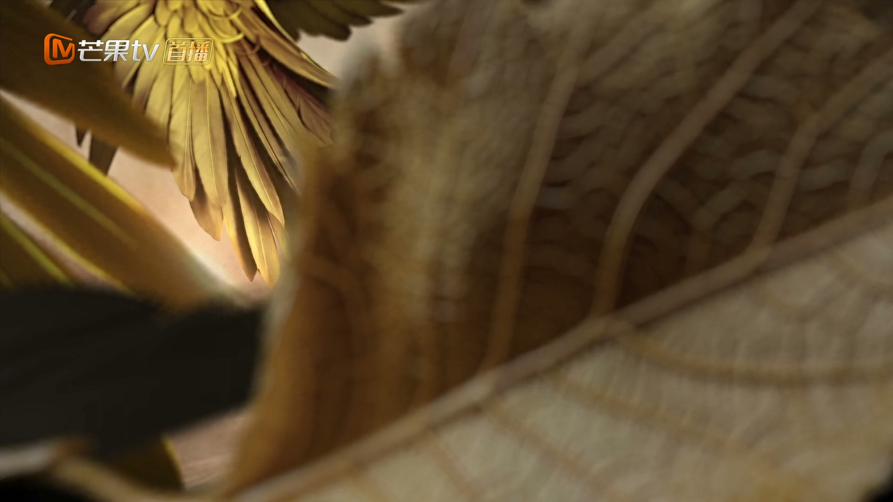
Drama Recap · 剧情图文总结
第 34 集 · 火制封印
六冥威逼琉羽交出凤来，琉羽携凤来踏上逃亡之路。第一次见识死亡的凤来，在琉羽怀中懂得了「生命如流水，永不停止」。灵界大乱之际，唯有凤来能成为火之封印终结战乱——临别一诺，从此千载。
凤来终究没能逃离棋子的宿命。六冥试出他的力量超乎想象，决意强夺；琉羽带着凤来一路逃亡，小魑魅方蓝死在路上，凤来第一次懂得死亡与延续。灵界大乱之际，唯有凤来能成为火之封印结束战乱——他笑着与琉羽约定，转身赴渊，从此千载难见。
一个月过去，六冥追问凤来对魑魅之力的掌握。琉羽如实相告：凤来与常人无异，并无操控魑魅的天赋。六冥震怒：再给你三天，若做不到，留你无益。琉羽的师姐沈木月看在眼里，直言师父早已为野心疯狂。
剧里的鸡毛蒜皮，往往是人生的缩影。这些情节不只是故事——当你在现实中遇到同样的处境时，它们能提醒你：先做什么、别做什么、怎么说才有效。
情境：沈木月看穿师父已为野心疯狂，提前问琉羽：真到那一天，你是帮她，还是跟我走？
情境：六冥以「留你无益」要挟琉羽，强夺凤来，最终逼反了身边最亲近的两个人。
情境：凤来初遇死亡，琉羽没有粉饰，用「生命如流水」让他理解归去与延续。
情境：凤来本可逃离，却主动选择成为火制封印，只因「会有很多像你我一样的人不用再哭」。
情境：沈璃一回到灵界不叙寒暄，开口便问灵尊何在、墟天渊情况如何，迅速进入战斗状态。
情境：三界百姓在灯火前为王爷、为灵界祈福，万千祈愿汇成天外天的星光。
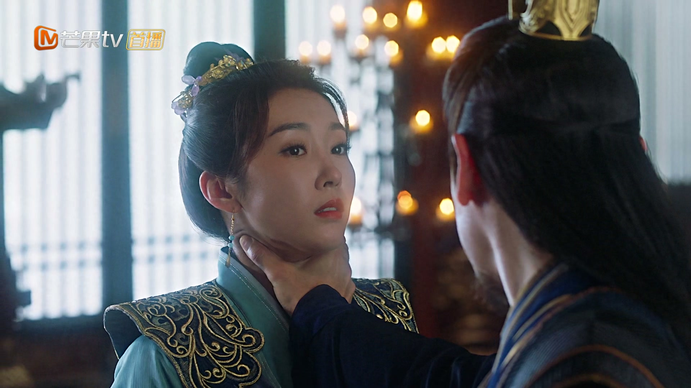
一个月过去，六冥把琉羽叫到殿前，问凤来对魑魅之力掌握得如何。琉羽如实回答：这一月训练下来，凤来并无魑魅之力，与寻常人没有两样。
六冥震怒：我花了足足一个月，为你养了多少魑魅，你竟告诉我她没有魑魅之力？他撂下狠话——再给你三天，若做不到，留你也无益。
关键台词 · KEY QUOTES
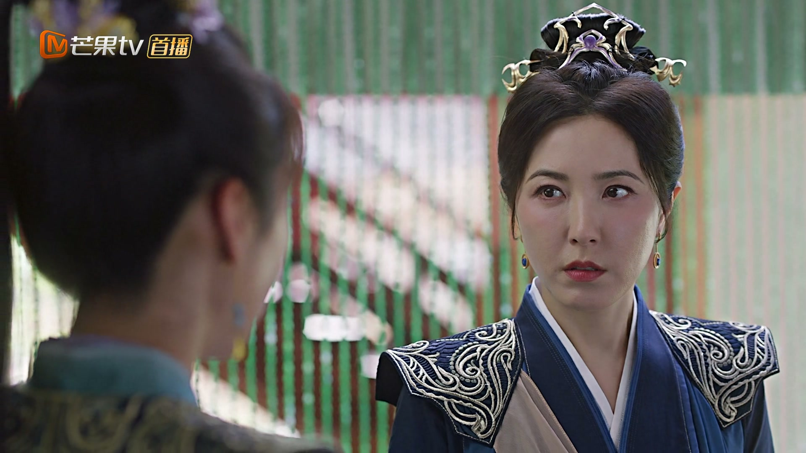
沈木月找到琉羽，直言师父已经变了：她越发疯狂，越发执迷。炼制魑魅、与仙界争雄，这些说辞早已不是为了灵界的安危，而是她一个人的野心。若师父再如此执迷下去，我或许未必能容她。
她问琉羽：若真有那么一天，你是继续留下来帮她，还是跟着我走？琉羽望着远处的天际，沉默许久，只说：或许还会有别的办法。两人谁都没有把话说透，心里却都明白，这一天恐怕不会太远。
关键台词 · KEY QUOTES
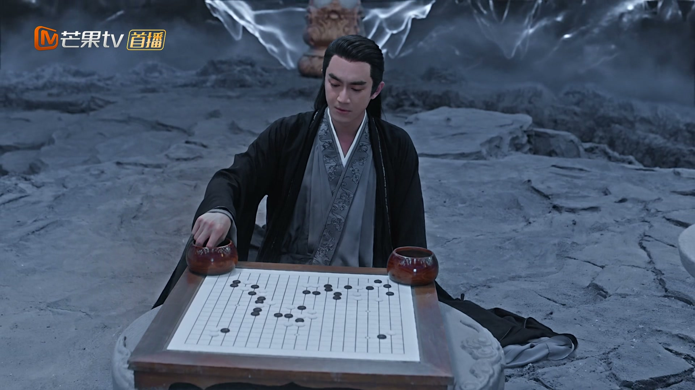
天外天中，沈璃继续研究画卷法阵。光芒灌入阵法后，她看到了更多旧事：南天门上她与行止闹的那一出，想必师父也已经知道了她的存在。她想从中寻出离开的办法，却始终不得其门而入。
她心中隐隐不安：师父如今定也在担忧、也在盘算着如何应对这场危机。这画卷里的过去，与眼前的困局，似乎正被一根看不见的线悄悄牵在一起，只待她找出那个答案。
关键台词 · KEY QUOTES
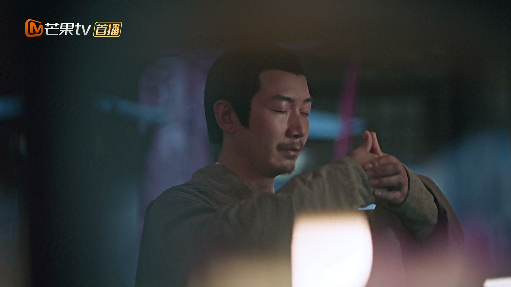
人间灯火如河，祈愿树前的孩童踮起脚，认认真真许下心愿：希望爹爹平安归来，希望王爷平安归来，希望墟天渊不要再出事，希望这一年大家都能平平安安。
千万个声音汇成同一句话——希望王爷平安归来，灵界度过这场危机。这些祈愿在人间汇聚，化作天外天的一颗颗星辰，也照进被困的沈璃心里，让她知道自己从来不是一个人在扛。
关键台词 · KEY QUOTES
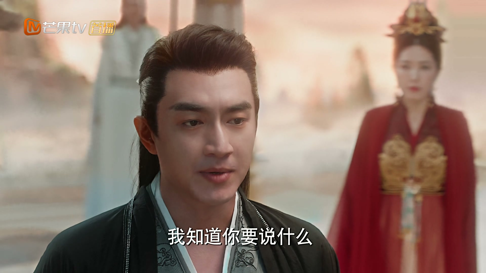
行止查出苻生以四物代替墟天渊原有的封印，这四物远不如原来的山河柱稳固，不过是苻生一时用来撑住局面的权宜之计。若四物集齐，封印必破，届时魑魅涌出，三界危矣。
而这缺了的火之一位，正是沈璃的碧海苍珠。行止把她困在天外天，既是护她周全，让苻生动她不得，也是让苻生凑不齐这第四物——只要她安然无恙，封印便破不了。
关键台词 · KEY QUOTES
六冥亲自出手试探凤来，发现他的力量远超预期，顿时起了强夺之心，决意将凤来带走。琉羽拦在身前不肯让步，凤来也死死抓住她的衣角，说什么都不松手。
六冥冷声道：你是为师最满意的弟子，别让我失望。琉羽却没有回头，牵着凤来头也不回地离开——从这一刻起，她彻底选择了凤来，也选择了与师父决裂这条路。
关键台词 · KEY QUOTES
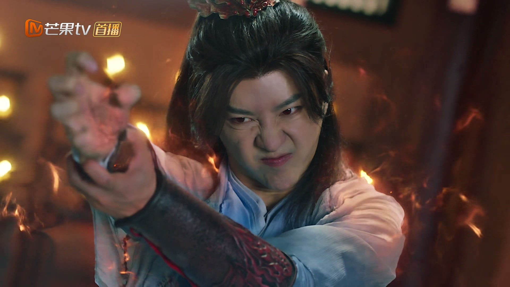
六冥翻脸，下令追杀凤来。逃亡路上，与琉羽、凤来同行的小魑魅方蓝重伤不支，倒在凤来面前，气息一点点弱下去，任凭凤来怎样呼喊都再无回应。
凤来第一次看见死亡，不知所措地喊着小方蓝的名字，一遍又一遍。琉羽从身后轻轻抱住他，声音轻得像怕惊碎什么：凤来，别怕，我在。
关键台词 · KEY QUOTES
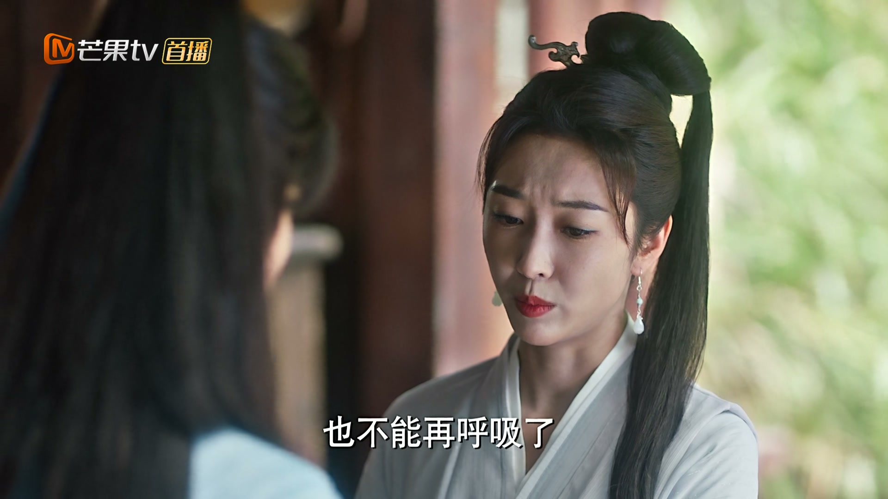
琉羽抱着已经没了气息的小方蓝，温柔地教凤来面对这场离别：死亡不是结束，而是归去，是回到生命最初的来处。凤来红着眼睛，似懂非懂。
「生命就像这流水一样，有时会汇聚，有时也会枯竭，但永远都不会停止——这便是生命的延续。」凤来似懂非懂，却把这句话牢牢刻进了心里，记了一辈子。
关键台词 · KEY QUOTES
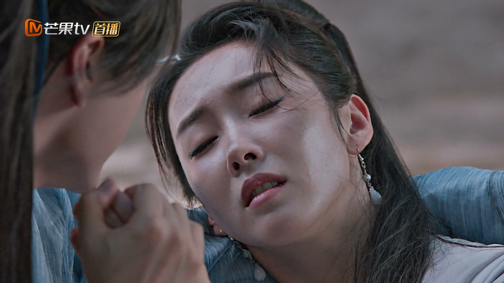
追兵赶到，刀剑直指琉羽。凤来再也忍不下去，第一次暴怒出手，魑魅之王的力量惊天动地，护在琉羽身前，就此反出师门。
灵界大乱，战火殃及无辜百姓。琉羽望着彻底失控的局势，悔恨莫及——她早知道会有这一天，却没想到它来得这样快、这样惨烈。
关键台词 · KEY QUOTES
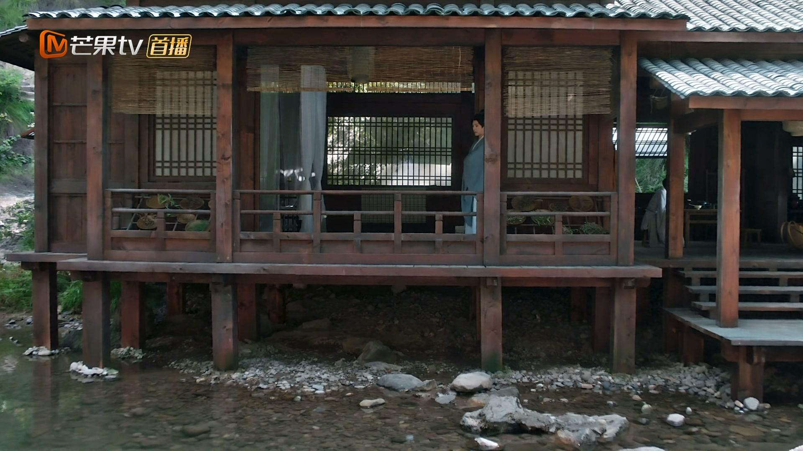
五行封印缺了火之一位，三界战乱无法平息，唯有凤来能成为火制封印，终结这一切。琉羽万分不舍，凤来却笑着安慰她，说自己不怕。
「我若去了，便会有很多像你我一样的人，他们不用再哭了。」凤来与琉羽郑重约定后会之期，又替她擦去眼泪，转身毅然赴渊，从此千载难见。
关键台词 · KEY QUOTES
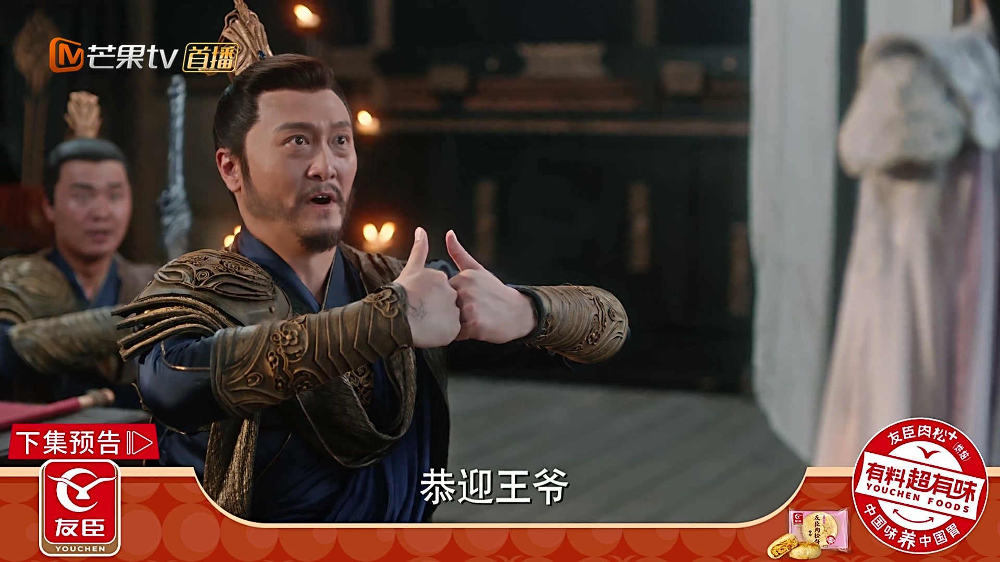
沈璃自天外天一路赶回灵界，将士们早已列队恭迎：「恭迎王爷！我们大家都在等您。」她顾不上寒暄，脚下生风，径直朝灵尊殿而去。
沈璃开口便问灵尊何在。将士如实回答：灵尊已带人马奔赴墟天渊，我等留守此处守城，尚不知那边情形如何。话音未落，远处战鼓已隐隐传来——大战，一触即发。
关键台词 · KEY QUOTES
困于天外天画卷，从光芒中窥见千年前凤来与琉羽的故事；结尾赶回灵界，得知灵尊已率人马奔赴墟天渊。
看破苻生以四物代替封印的图谋，深知沈璃的碧海苍珠是关键，将她护在天外天。
威逼琉羽训练凤来、强夺凤来、下令追杀，为野心不择手段，终遭反噬。
在逃亡中初识死亡，为护琉羽反出师门，最终自愿成为墟天渊的火制封印。
在师父与凤来之间挣扎，最终选择守护凤来，含泪送他赴渊，留下「我等你」的千年之约。
看穿师父的疯狂，暗中劝琉羽选择站队；战后接掌灵界，抚养沈璃长大。
以四物代替墟天渊封印，图谋破封释放魑魅，逼得行止将沈璃锁在天外天。
一声「我不许你们伤她」，力量惊天动地，被当作棋子的魑魅之王第一次为自己、为所爱而活。
琉羽抱着死去的小方蓝，教凤来理解死亡与生命的延续，台词温柔而苍凉，是全剧主题之一。
凤来自愿赴渊，一句「会有很多人不用再哭」成就千年悲愿，也埋下沈璃身世的伏笔。
沈璃自天外天杀回灵界，一句「灵尊何在」问出，大战在即的气氛扑面而来。
师姐问琉羽「是留下来帮她，还是跟我走」，为日后两人道路分岔、沈璃身世埋下伏笔。
苻生需要沈璃的碧海苍珠作为火质封印，沈璃的身世与墟天渊的封印之秘就此交织。
凤来成为墟天渊火之封印，千年之后将以另一种方式回归，与沈璃血脉重逢。
琉羽一句「我等你回来」，是千年后凤来破封、寻她而去的伏笔。
沈木月预言的「师父越发疯狂」一一应验，她最终接掌灵界、抚养沈璃，成为沈璃最亲的人。
「生命如流水，永远不会停止」——琉羽将以延续生命的方式，让沈璃带着她的期盼活下去。